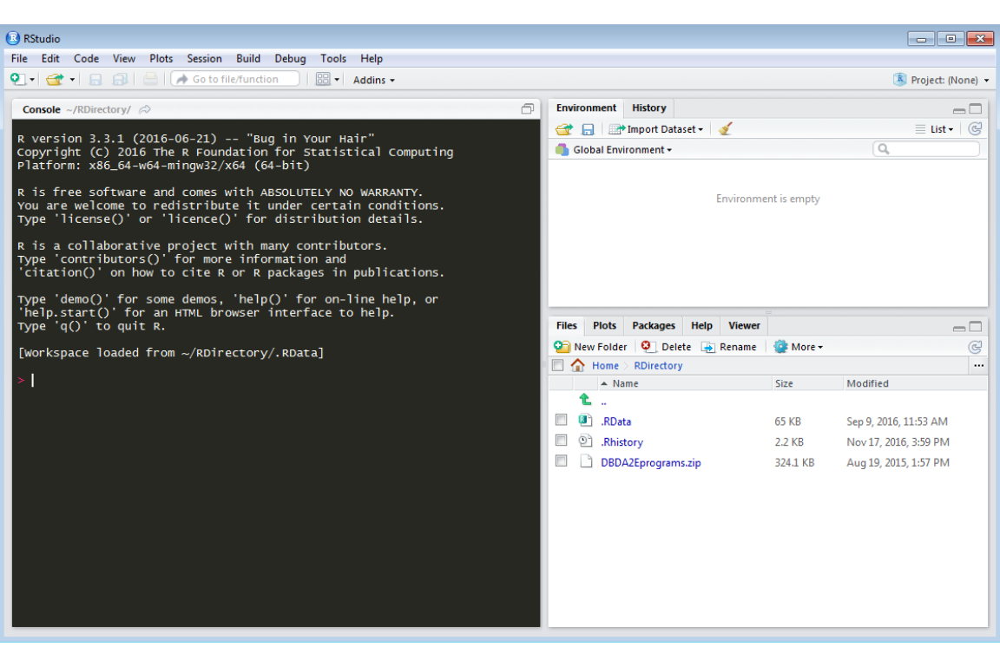
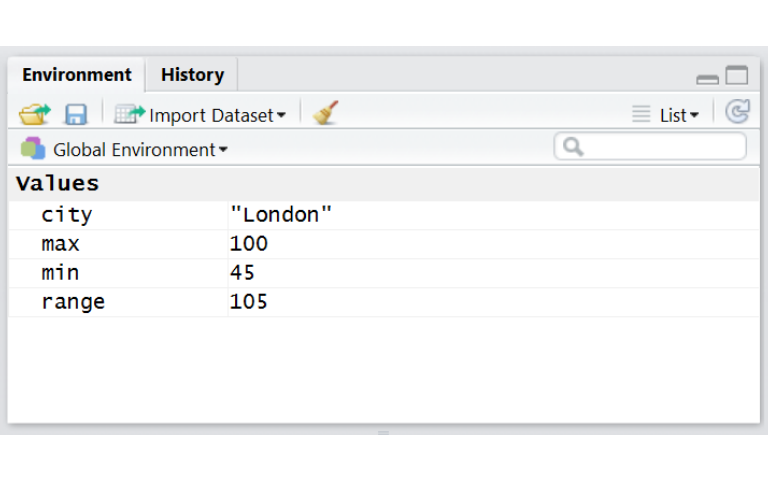
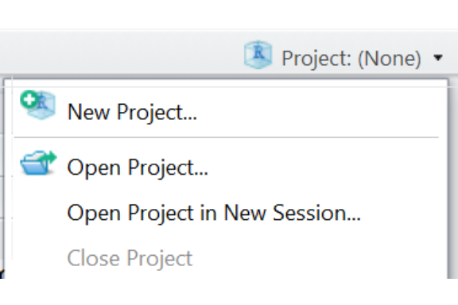
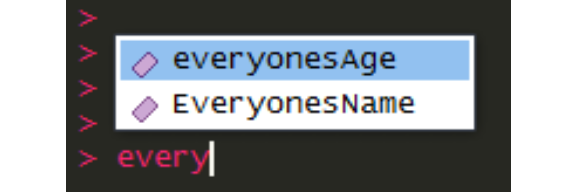
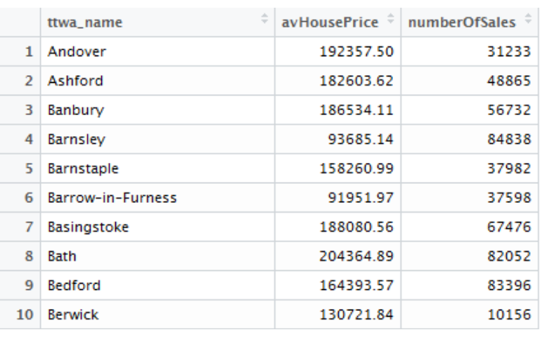
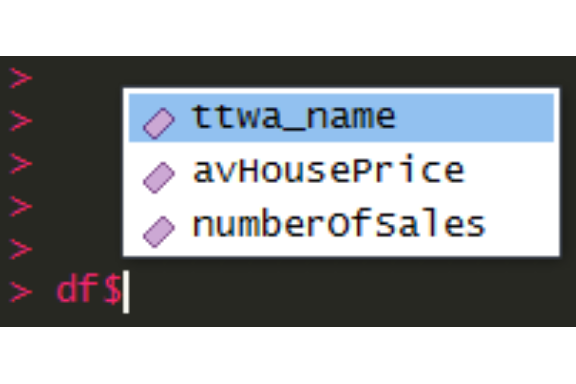
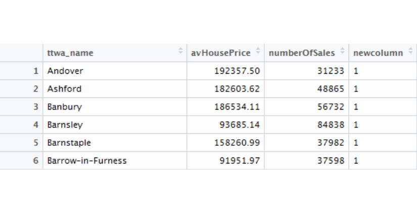
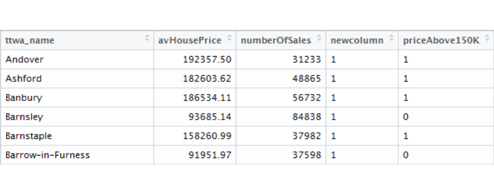
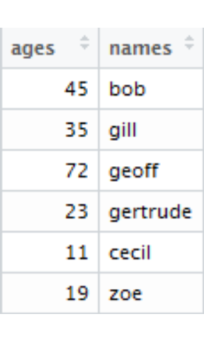

1 ESSENTIALS
1.1 Getting the course project folder and data
TO BE DONE, INCLUDING HOW TO IMPORT PROJECT FOLDER INTO RSTUDIO.CLOUD
1.2 Getting R and RStudio
TO ADD: SECTION EXPLAINING HOW TO USE RSTUDIO.CLOUD for e.g. people with Chromebooks
You’ll need a computer with R and RStudio installed. If you need to install these, it’s very easy. Either use the following links or use google to find them:
Install RStudio with the download appropriate to your operating system at the bottom of this page: https://www.rstudio.com/products/rstudio/download/
Before running RStudio, also install R itself from here, again choosing the link for your operating system: https://cran.rstudio.com/
Both of these will provide you with self-installers, there should be nothing awkward to do. Once installed, run RStudio and let’s begin…
1.3 A first look at RStudio
RStudio is a self-contained environment for doing everything in R. As we’ll see throughout the course, it does a heap of different things to make programming in R as painless as possible.
First thing - open RStudio and have a look at what’s there. You should see something like the following. Yours may have a different colour scheme, don’t worry about that:

RStudio presents you with these panes:
- The console pane (left in the above image - note it says ‘console’ at the top of the window) where we can enter commands and run them immediately.
- The environment pane (top right): all our data and variables will appear here.
- A pane with a number of tabs (bottom right), currently open on files. When we first produce graphics, these will appear here in the plots pane.
1.4 Entering commands in R
Before we do anything else, let’s get a feel for how to enter commands in R.
We’ll use the console to do this. If the cursor isn’t already blinking in the console, click anywhere in the console pane. The console will execute anything we put here as soon as you press enter.
Try some of these or something different just to get a feel for it, pressing enter after each. Any maths will be evaluated and returned.
80
80+20
80*20
80/20
'This is some text'
sqrt(100)That last one - sqrt(100) - is a function. Functions are in/out machines: in this case, stick 100 in and get its square root out. Anything you put inside brackets in R is going into a function. You can stick anything in there that will evaluate, so we could also have done:
sqrt(45+55)## [1] 10sqrt(sqrt(16))## [1] 2Take note of that simple point about functions when we put a function within another one: it means we can combine functions and outputs in whatever way we want. This makes R very powerful and creative.
1.5 Assigning to variables
Everything, whether it’s a single number, a list of numbers, a piece of text, an entire dataset or a graph, can be assigned to a variable.
Variable names should be a balance between brevity and clarity: you want it to say something that will make sense to you when returning to the code a month later, but it also needs to be typeable. (Although as we’ll see, RStudio removes a lot of the pain of typing for us with its autocomplete feature, so if you do want very descriptive variable names, go for it.)
Here’s some examples to try in the console.
R’s assignment operator is a ‘less than’ followed by a minus:
Typing both of these the whole time can be a pain - so RStudio has a handy shortcut key:
- ALT + ‘minus’
Have a go at using this shortcut key when assigning these examples:
city <- 'London'
max <- 150
min <- 45
range <- max - minYou’ll see when assigning to variable names in the console, it doesn’t automatically output what’s just been assigned. You will, however, see them appear in the environment pane on the right: your new variables are there, under ‘values’.

You can also output these assigned values by typing the variable names into the console, as we were doing with simple values before:
city## [1] "London"min## [1] 45max## [1] 150range## [1] 105And of course we can then use the variable names in functions:
sqrt(range)## [1] 10.24695We’ll get on to putting all this into a reusable script in a moment.
1.6 Opening a project in RStudio
RStudio projects are self-contained folders that keep everything for a particular project together in one place. They also provide a number of really useful features to help make life easier, as we’ll see.
The folder you unpacked to get at this PDF is also an RStudio project. Let’s open it in RStudio now.
Access RStudio’s project loading dialogue in the top right. It should currently just say ‘project (none)’. Click to get a range of project options. You can tell RStudio that an existing folder should become a project - but we’re opening one that’s already there, so choose open project:

Navigate to the folder you unzipped, open the folder and double-click the UBDC_R_viz_intro_primer.Rproj file.
You may not immediately see much change - but now the whole workspace will be saved, including any variables you can see in the environment panel. As we’ll see below, now we’re in an RStudio project, we don’t have to worry about where the working directory is: RStudio sets it automatically to our project folder. As long as we’re working in that folder, there’s no need to mess around with the full path to the file. (It also allows us to move RStudio projects and give them easily to other people to use.)
Note that in the top right you can now see the project name. The `files’ tab in the bottom right can also be used to access files in the folder.
1.7 Creating a new script and running code in it
You’ll program all of the work in this document into a single script file in RStudio. To get a blank script to start with, go to:
- File / new file / new R-script
Note how the menus tell you what shortcut key to use for a lot of actions. In this case we can see Ctrl+Shift+N will also create a new script.
The script opens in a new tab in a pane above the console. Currently it’s just named Untitled1 (on the tab itself, at the top). Click in the script pane to move the cursor there.
Start scripting! Just add a couple of lines, whatever you like - use some of the commands we entered into the console above, for example. Note: unlike the console these lines won’t run until we tell them to run. So just add whatever you want to add over a few lines, pressing enter to move to the next one. We’ll run the lines in a moment.
Once you’ve added something, the name (currently Untitled1 still) will turn red: you can now save it.
Save the new script either via the menu (File/save) or CTRL + S. Give it whatever name you like. Note that it will save in the top level of your project folder. RStudio will give it the extension .R
Now we can run our first few commands. In a script, we have a few ways to choose, depending on what we want to do.
A quick note about the programming philosophy of R. Where some programming languages are all about writing entire programs, compiling them and running them as a whole, start to finish, working with R is much more iterative and experimental.
R can run entire programs - that’s all the libraries are, after all - but it’s also designed for experimenting with and exploring data on the fly. We’ll be doing a lot of this in the course.
OK, so here’s three options for running your script:
- To run a single line of code (as we were doing in the console): place your cursor anywhere on a single line you want to run. Then press CTRL + R or CTRL + ENTER. Both do the same, so whichever works for you. This will run that single line. You’ll see it echoed in the console, as well as the output of the command, same as when we ran it directly in the console.
- There is also the option of using the run button at the top right of the script pane, but that’s generally more faff than using the keyboard.
- To run multiple lines of code: highlight more than one line of script, as you would highlight text in any text editor or word processor. Then, as before, use the keyboard ‘run’ commands, either CTRL + R or CTRL + ENTER.
- You can highlight the text with the mouse, or use the keyboard. If using the mouse, you can also use the mouse wheel to scroll the script while highlighting.
- If you’re not familiar with keyboard shortcuts for highlighting: hold down shift then use the up and down arrows to highlight a row at a time.
- Third: you can run the entire script this way just by selecting everything with CTRL + A (or right-click and select all) Personally, I pretty much never do this, which is why I’ve left it until last. When you save your RStudio workspace in the project, it will save all of the variables and progress you’ve made so far, so there is usually no reason to run an entire script from scratch every time you start work. (That doesn’t mean some things shouldn’t run in their entirety - but it’s good to put these things into functions in their own script. We won’t be doing that, but it’s worth mentioning.)
1.8 ‘But will it make sense in two month’s time…?’ Using comments and sections
Code you write during the course may not make the slightest bit of sense in the near future. This happens to all programmers. So be kind to your future self and let them know why you did what you did. It’s absolutely essential to take some steps to make life easier for yourself by making sure the code is readable and clear. Leave plenty of space in your code wherever you can for a start.
But the most essential way to make sure it makes sense:
- Comment all your code clearly
- Don’t ever say to yourself, ‘oh, this will make sense later’.
- So comment all your code clearly!
R uses the #hash symbol for comments. So for your few first script lines, you can add a comment or two thus (obviously, make your comments match what script you wrote!):
#Oh look, this is a comment! It starts with a hash
#Using the assignment operator
city <- 'London'
max <- 150
min <- 45
#Finding the range by substracting max from min
range <- max - minRStudio also provides a hugely useful comment feature:
- Adding four dashes to the end of a comment automatically makes it a section. Try it - add four dashes to your first comment.
#Using the assignment operator----As you add the dash, you’ll see a little down-pointing triangle appear on the left. Also, at the bottom of the scripting window, the same phrase should have appeared. Once we add more sections, you can click in that area to move between them.
- Shortcut key tip: ALT + SHIFT + J brings up the section menu without having to click on it. (At the moment we’ve only got one section, mind.)
Some people also like to make their sections more visibly distinct by doing something like the comment below. It’s a matter of personal taste - whatever helps you keep your code clear.
#~~~~~~~~~~~~~~~~~~~~~~~~~~~~~~~~~~~~~~~~~~~~~~~~~~~~~~~~~~~~~~~~~~~~~~
#Using the assignment operator----
#~~~~~~~~~~~~~~~~~~~~~~~~~~~~~~~~~~~~~~~~~~~~~~~~~~~~~~~~~~~~~~~~~~~~~~We’ll look at a few other keeping-things-readable ideas as we go on.
1.9 It’s all about the libraries
Commands already built into R (like the sqrt function we used above) are known as the base commands. But all the really awesome stuff in R comes from libraries. If there’s something you think you need to do in R, someone has most probably already built a library to do it.
For this workshop, we’ll be (mostly) using a set of libraries developed by one person: Hadley Wickham. Hadley’s designed these libraries with an underlying data philosophy - ‘tidy data’ - so that as much as possible there is one clean, standardised way of doing things.
We’ll use these libraries to get us from loading and organising data right through to visualising it in the ggplot library.
If a library isn’t already installed, you can install it with the following. (This is the first library we’ll be using, in the next section.) Do this in the console, not in your script, as it only needs running once. RStudio will download and install the library. (So you’ll need to be connected to the internet.)
install.packages('readr')Once the library is installed, you can load it ready for use with the following. This time, put this right at the top of your script, before all the code and comments you’ve just written as you’ll want to load these libraries every time you come back to the script.
library(readr)Notice, just to be awkward, that when installing libraries, the name needs to be in quotes but when loading it, it’s not.
As we’ll see shortly, readr gives us a nicer way of loading CSVs than base R provides.
##A quick look at vectors (boring but essential for later)
In R, a vector is just a collection of numbers, characters or other R object types. This may not seem terribly exciting right now, but understanding how R uses vectors helps massively with a lot of more complex activities we’ll be looking at later. Equally, not understanding how R uses them can lead to all sorts of confusion. As we go along, we’ll return to the concept of the vector and how R uses it. It’s actually very simple but easy to misunderstand initially.
Here’s how they work. Where before we were assigning single numbers…
bobsAge <- 45… a vector of numbers just looks like this. When scripting, you indicate it’s a vector with a c, enclose the values in round brackets and separate values with commas.
In your own script, after your previous commands, make a vector similar to this with six random ages.
everyonesAge <- c(45,35,72,23,11,19)This should be familiar enough to anyone who’s ever worked with mathematical vectors. And it’s the same structure for any other variable type, like strings.
This time, make a vector of six names - pick whatever names you like but try and split them evenly between male and female.
everyonesName <- c('bob','gill','geoff','gertrude','cecil','zoe')You can either run each line after you’ve written it, or write both lines first, select both of them and run them together, as explained above.
As before for single values, if you type these variable names into the console and press enter, you’ll see the whole vector.
RStudio provides excellent code completion that massively helps with scripting. As an introduction to this: when you start to type either of the two variables we just made, you should see an autocomplete box like this:

You can scroll through these with up and down arrows or use the mouse. Choose one now and press enter - it will be added to the code.
You can also use CTRL + SPACE to bring up the autocomplete box at other times.
everyonesAge## [1] 45 35 72 23 11 19everyonesName## [1] "bob" "gill" "geoff" "gertrude" "cecil" "zoe"You can also access the individual values in a vector by using its index in square brackets after the variable, where 1 is the first entry and - in this case - 6 is the last:
everyonesAge[1]## [1] 45everyonesAge[5]## [1] 11everyonesName[2]## [1] "gill"everyonesName[3]## [1] "geoff"R also has syntax for giving a range of integers. Type this directly into the console to get all numbers from 2 to 5:
2:5## [1] 2 3 4 5So we can use this to access values in our vector. (It’s up to you whether you want to run these directly in the console or put it in your script so you can save it.)
everyonesName[2:5]## [1] "gill" "geoff" "gertrude" "cecil"Now: an example that begins to show why vectors are so important in R. If we want to access different names in our vector of names, we do the following. Here’s all the men and women separately (note, you’ll have to check your vectors to see what index the male/female members have - don’t just copy these numbers.):
everyonesName[c(1,3,5)]## [1] "bob" "geoff" "cecil"everyonesName[c(2,4,6)]## [1] "gill" "gertrude" "zoe"What happened there? We used another vector of numbers to index our earlier vector. R is built on vectors in this way. As we’ve already seen that vectors can be assigned to variables, we can also do the following:
women <- c(2,4,6)
men <- c(1,3,5)
#Replace the vectors with their variable representation
everyonesName[women]## [1] "gill" "gertrude" "zoe"everyonesName[men]## [1] "bob" "geoff" "cecil"Another way to access the contents of vectors is using R’s boolean values - that is, the values of TRUE and FALSE. If we use a vector of TRUE/FALSE values, for example, we can mark as TRUE if any of the names are female:
everyonesName[c(FALSE,TRUE,FALSE,TRUE,FALSE,TRUE)]## [1] "gill" "gertrude" "zoe"You can also use T and F as short-hand for TRUE and FALSE in R to save typing, if you want. For either, they must be in upper-case, however:
everyonesName[c(F,T,F,T,F,T)]For any vector members where this is TRUE, it returns that value for us. Why should you care about this? Because if we can use TRUE and FALSE to access vector indices, we can ask questions of the vector using {conditionals}.
For example, if we assume our everyonesAge vector is telling us the age of the people in everyonesName, we can ask, ‘who’s over 30 years old?’ (this is why we created six ages and six names above - make sure both of your age and name vectors have six entries each):
everyonesName[everyonesAge > 30]## [1] "bob" "gill" "geoff"What just happened? Nothing more than we just did above when we used a vector of TRUE/FALSE values, except that R uses a conditional to create them. If you put this directly into the console -
everyonesAge > 30## [1] TRUE TRUE TRUE FALSE FALSE FALSE- that just returns a vector containing TRUE/FALSE values from asking whether the ages in everyonesAge are more than 30. And as before, we can just stick that vector straight into everyonesName to find out who’s over 30.
This is the full list of logical operators that we can use to ask questions like this. Note especially the double equals: this will allow us to find exact matches for values and text.

OK, so I totally lied about that being a quick look. But it’s all going to be very useful. The ability to use vectors in this way to access our data will turn out to be essential.
But that’s quite enough of vectors for now. They will crop up again shortly as we look at why they’re so important to how R thinks. But onto to the marginally more exciting…
1.10 Loading a file into a dataframe and examining the data
We’ll be keeping all of our data in dataframes. The easiest way to understand these is just to look at one. Your project folder has a sub-folder called data. All of the data you’ll use in the course is in there. Let’s load an example dataframe to play with.
Make this a new section in your script using comment code as we did above - something like the following (remembering to put in four dashes to turn it into a section):
#~~~~~~~~~~~~~~~~~~~~~~~~~~~~~~~~~~~~~~~~~~~~~~~~~~~~~~~~~~~~~~~~~~~~~~
#Loading an example dataframe----
#~~~~~~~~~~~~~~~~~~~~~~~~~~~~~~~~~~~~~~~~~~~~~~~~~~~~~~~~~~~~~~~~~~~~~~While we’re here, time for another top tip. You’ll often be creating code that you want to copy and move - we’ll be doing this a lot shortly. RStudio has a couple of fantastic shortcut keys to help with this. If you want to practice these, use them for making the section heading / comment above. We can do this:
- Make the first comment line - a hash followed by a line of tildes, as above. Put the cursor on your new line. Now: SHIFT + ALT + DOWN ARROW. This makes a copy of the line below.
- Lastly, move your newly copied line one down to make room for the section heading itself: just use ALT + UP or DOWN arrows to move it.
- Then just add in the final header in the middle.
This ability to quickly copy and move code around will come in very useful later. It’s worth having these shortcuts at your fingertips.
RStudio has the full list of shortcut keys in the help menu. You’ll even see, pleasingly, there’s a shortcut key to get the list of shortcut keys! Note all the cheatsheets in that menu too.
Now, Load the example data from the CSV file from the ‘data’ folder with the following, putting it into your script below the section heading. Take care - that’s an underscore, not a full stop, between ‘read’ and ‘csv’
df <- read_csv('data/averagePricePerTTWA.csv')The read_csv command (from the readr package you installed and loaded above) loads the CSV data, turns it into a dataframe and assigns it to our variable name, df. We can now use df to work with the data. Readr will also do its best to work out what type of data is in each column for you. So notice the message output that appears in the console when you use read_csv.
## Parsed with column specification:
## cols(
## ttwa_name = col_character(),
## avHousePrice = col_double(),
## numberOfSales = col_double()
## )As with our last assignments, the dataframe also appears in the environment pane under data, telling us there are 166 observations and 3 variables.
Here’s another really useful RStudio autocomplete feature too: if you’re trying to get a file that’s in the project folder, once you’ve typed your quote marks, CTRL+SPACE will give you file autocomplete options. So for example, if you type the following and then, after the slash, press CTRL+SPACE, the full csv name will appear, as it’s the only file in the folder. If there are many files, RStudio provides a list.
df <- read_csv('data/')We can look directly at this data in a few ways. A really useful one is this:
- Click anywhere on the df variable name, or to the right of it, in its line in the environment pane. When you’re in the right place, the cursor will turn into a hand. This opens the dataframe in its own tab. You can scroll through the data.

This shows us the basic structure of the dataframe, familiar enough from programs like Excel: variable names are in columns and each row is an observation. So we’ve got ttwa_name: TTWA is short for ‘Travel to Work Area’. These have towns and cities at their centre and include the surrounding area from which most people commute. There’s also the average house price and a count of sales.
So going back to that output to the console when we loaded the CSV: we can see it told us not only the column names but the variable type that read_csv assigned it. ttwa_name is a character column, avHousePrice is ‘double’ (can have many decimal places) and numberOfSales are integers.
If you have data with dates in, read_csv also does some other clever type assignment that makes dates easy to work with. R’s base CSV loader (read.csv uses a dot not an underscore) won’t do this for us. Manually formatting dates is a pain to be avoided!
We can also peek at the data using code. These two functions will show you the top and bottom few values if you input the dataframe into them. (This is the kind of quick looking at data that the console is good for.)
#Look at the top and bottom of the dataframe
head(df)
tail(df)We have another great autocomplete feature for dataframes. In the console, type the name of the dataframe and then a dollar sign…
df$You should see a list of the dataframe’s variable names appear, as below. You can access these as we did with the variable names above. Choose one now and press enter - it will be added to the code. Press enter again to run the line: R will output all 166 values for that variable to the console.

How do we access particular observations or values in a dataframe? The syntax is similar to what we used with vectors: square brackets after the df variable name. Except it’s now two dimensions. Dataframes are referenced like this:
df[row,column]So to access the price of the property in the first row:
df[1,2]You can also access entire rows or columns. To look at the first row, for example:
df[1,]We just leave the column index blank, meaning ‘show all columns’. The same applies for columns… but with a slightly confusing difference, so to access whole columns, for now, just stick to using e.g. ‘df$ttwa_name’ as we did above.
We can use conditionals in our dataframe indices in exactly the same way we did with vectors. Say, for example, we want to keep only those cities that had over 100,000 sales. Just use the conditional in the row index (remembering the comma so we get all columns):
highSalesCount <- df[df$numberOfSales > 100000,]Checking in the environment panel, This new dataframe has 63 cities/towns compared to 166 in the original df.
All of these methods for examining what’s in the dataframe can also be used for assigning TO the dataframe.
If we want to add a new column, for example, it’s a simple matter:
df$newcolumn <- 1Looking back at the dataframe view tab shows this new column is now present:

It’s not a very exciting column, admittedly: we’ve just added a 1 to all rows. But note R’s behaviour when we asked it to do this: we passed it a single number and R took this as a request to add it to every row in our new column.
This can be used if we combine it with conditionals to ask questions about the data. We already saw how to ask a simple vector about something - we found people over the age of 30. Now we can do the same with a dataframe, because:
Dataframe columns are just vectors. So everything we can do with everyonesName we can also do with df$avHousePrice and the other columns.
Say we want to know which cities have an average house price above £150,000. First we can just add another single-value column, as we just did, and fill it with zeroes to start with:
df$priceAbove150K <- 0Then we can overwrite rows above that value with a flag by selecting the elements of the vector with a conditional just as we did above with ages:
df$priceAbove150K[df$avHousePrice > 150000] <- 1Our new column now contains the original zeroes - and ones in those rows that met our price condition:

Just the same as before, when we do this in the console, you can see it returns a vector of TRUE/FALSE values:
df$avHousePrice > 150000But this time we’ve used our TRUE/FALSES to assign a value to those members of the vector
Now we’ve done that, we can use the table function to give us a count of how many cities/towns are above and below our price difference:
table(df$priceAbove150K)##
## 0 1
## 85 81So 81 TTWAs have an average house price above £150,000.
It’s worth taking some time to check it makes sense: that the same principles for basic vectors apply to dataframe columns, which are themselves also just vectors.
We can prove that just by showing how you build a dataframe from scratch rather than loading it. We could use our previous two vectors thus:
people <- data.frame(ages = everyonesAge, names = everyonesName)You’ll see a people dataframe appear top-right in the environment pane, along with the dataframe we loaded. We can look at it as we did before:

OK, that’s all the basics we need to cover. Look forward to seeing you!